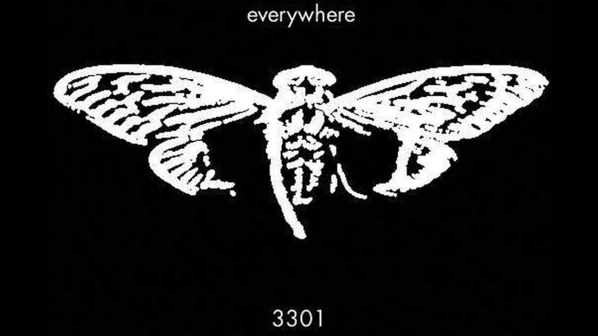
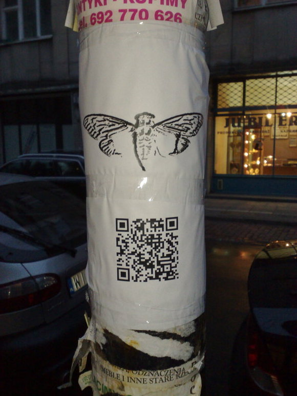
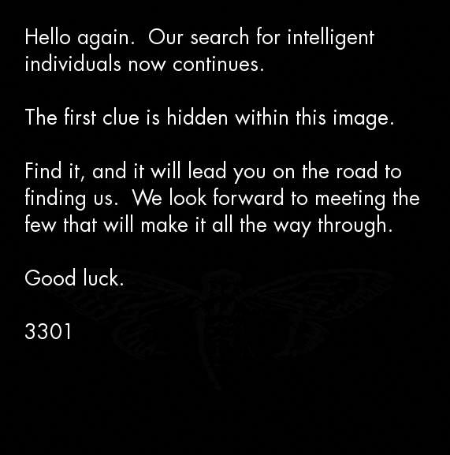

Cicada 3301

Oque é CICADA 3301?
A Cicada 3301 foi uma série de quebra-cabeças e desafios enigmáticos que começou a aparecer online em 2012. O nome "Cicada 3301" refere-se ao nome de usuário utilizado por uma organização desconhecida que criou esses quebra-cabeças. Esses desafios eram divulgados em fóruns online, imagens, mensagens e sites específicos.
Os quebra-cabeças eram extremamente complexos e envolviam uma combinação de criptografia, programação, literatura clássica, música e outras disciplinas. Os participantes que conseguissem resolver com sucesso os desafios eram conduzidos a uma série de locais físicos ao redor do mundo, onde encontravam novos enigmas.
O propósito exato da Cicada 3301 nunca foi totalmente esclarecido, e a organização por trás dela permanece desconhecida. Há especulações de que a Cicada 3301 seja uma espécie de teste de recrutamento para uma organização seletiva, como uma agência de inteligência, ou até mesmo uma iniciativa artística elaborada.
Desde a sua primeira aparição em 2012, a Cicada 3301 não lançou novos desafios, e muitos aspectos dessa história permanecem envoltos em mistério. A natureza enigmática da Cicada 3301 a tornou um fenômeno intrigante na cultura online.
O primeiro ENIGMA
A primeira mensagem que indicava o início do quebra-cabeça foi postada no fórum 4chan, mais especificamente no tabuleiro "/b/" (random), conhecido por ser um espaço para discussões diversas e muitas vezes irreverentes.
A mensagem dizia o seguinte:

Tradução:
Olá de novo. A peregrinação ainda está esperando. Dentro desta imagem há uma mensagem oculta que o colocará no caminho certo. Estamos ansiosos para conhecer aqueles que chegarão ao final desta prova.
Continuaremos buscando pessoas altamente inteligentes, mas no final desta etapa muitas serão eliminadas. Boa sorte.
3301
O quebra-cabeça, conforme foi descoberto, era focado fortemente em segurança de dados, criptografia e esteganografia. As pistas foram espalhadas em locais por todo o mundo - desde os EUA à França e Polônia, dentro das várias formas de comunicação, incluindo a internet, iphone, CDs de boot do Linux, imagens digitais e sinais de papel. As pistas também referenciavam vários livros, poesia, arte clássica e música. Era um verdadeiro caminho de migalhas, cada pista encontrada levando a outra mais bem escondida e complexa que demandava horas ou dias para ser interpretada e compreendida. Para confirmar a autenticidade, as pistas eram sempre assinadas pela mesma chave privada.
Devido a sua natureza, muitos especularam que Cicada 3301 era uma ferramenta de recrutamento de alguma agência governamental de inteligência. Existem rumores de que a CIA realizou testes semelhantes, publicando nos anos 1960-1970 códigos em jornais como passatempo e oferecendo recompensa para quem conseguisse desvendá-los. A mesma abordagem foi utilizada na Inglaterra na década de 1930, quando o Serviço de Inteligência tencionava contratar pessoas com habilidade para quebrar códigos. O genial criptologista Alan Turing foi atraído para o trabalho de code-breaker depois de resolver uma série desses quebra-cabeças. Turing se tornou famoso posteriormente por quebrar o código da Máquina Enigma, usada pelos nazistas na Segunda Guerra.
Alguns afirmam que Cicada 3301 pode ser um jogo de realidade alternada, no qual os jogadores resolvem questões complexas no intuito de "passar de fase". Outros acreditam que Cicada 3301 é uma sociedade secreta que tem como objetivo promover uma melhoraria no nível de criptografia, privacidade e anônimato on line. Tal sociedade promoveria essas gincanas de questões e a partir dos resultados convidariam aqueles que se destacaram a participar de seu meio. A obscura Sociedade Vigilate, utiliza um expediente semelhante e seus membros agem como alegados guardiões da internet. Alguns apontam para eles a façanha de ter derrubado o notório site "The Silk Road" que negociava drogas através da Deep Web.
As pistas reveladas pelo Cicada foram encontradas em um grande número de localizações, bem distante uns dos outros. Isso leva a crer que o programa é bem financiado, organizado e conta com pessoas dispostas a promovê-lo ao redor do mundo. Mas ninguém realmente sabe quem são os envolvidos, já que nenhuma empresa ou indivíduo tentou levar o crédito por sua existência. Também é curioso que nenhuma pessoa que alegadamente descobriu a solução, tenha vindo à público revelar do que trata o teste.
Ao longo dos anos, alguns poucos indivíduos afirmaram ter completado as rodadas finais altamente complexas e "venceram" o concurso. Houve um rumor em 2012, que um e-mail foi enviado para os indivíduos que completaram o quebra-cabeça, no qual eles receberam uma avaliação de personalidade. Após passar nesta fase, os participantes foram recrutados, mas ninguém realmente sabe se isso é verdade. É possível que esses indivíduos tenham sido forçados a assinar um termo de confidenciabilidade no qual se comprometiam a manter em seredo o teor do trabalho para o qual seriam contratados, ao menos é o que os teóricos da conspiração acreditam.
O analista de sistemas sueco Joel Eriksson é uma das pessoas que alega ter decifrado o enigma do Cicada 3301. Mas ele alega nunca ter descoberto do que se tratava ou qual o propósito do teste. Quandoviu a imagem que foi postada junto com a mensagem, em 2012, ele imediatamente o reconheceu como um exemplo de estenografia digital, que é a ocultação de informações secretas dentro de um arquivo digital. A técnica é comumente associado com atividades criminosas como a pornografia infantil e o terrorismo.
Quando ele descobriu que a imagem estava criptografada, a curiosidade de Eriksson foi despertada e ele decidiu dar ao jogo uma chance. Em poucos minutos ele encontrou um endereço da web enterrado no código da imagem. Para sua surpresa, o link levou à imagem de um pato com a mensagem:

A essa altura, Eriksson já estava atraído pelo "jogo", a provocação foi o suficiente para ele seguir em frente.
Analisando outras variáveis ele descobriu outra mensagem escondida no desenho do pato. Com base nisso, ele foi conduzido a um quadro de mensagens do Reddit, onde estranhos símbolos de pontos e linhas estavam sendo postados. Eriksson estudou os padrões e descobriu que estes equivaliam a números maias, então começou a traduzi-los. Ele admitiu que, até então, os enigmas não envolviam quaisquer habilidades avançadas, mas dali em diante, as coisas começaram a ficar realmente interessantes.
Os quebra-cabeças lentamente começaram a conduzir para várias direções diferentes - caracteres hexadecimais, engenharia reversa, aplicação de números primos, matemática avançada... Em comum, o fato da imagem da cigarra (Cicada=Cigarra) se tornar recorrente.
Usando como base esses números, ele conseguiu aplicar uma espécie de chave para desvendar os enigmas e avançar nos testes.
Eriksson explicou que, como o quebra-cabeça se espalhou pelo web, milhares de codebreakers amadores se apresentaram para a caçada em busca de pistas. Vários usuários do 4chan, começaram a decodificação de mensagens coletivamente, o que provavelmente não era o que a organização pretendia. Mas Eriksson resolveu as pistas sozinho, mesmo tendo pouco tempo fora do trabalho para focar no mistério. Em determinado ponto, uma pista levou a um número de telefone com base no Texas, mas este só levou a uma secretária eletrônica e ao que parecia um beco sem saída. Entretanto, multiplicando os dígitos do telefone, ele encontrou um novo número primo, e um novo site com uma contagem regressiva e uma enorme imagem de uma cigarra.
lembrou Eriksson...
Mas o enredo estava prestes a ter uma nova reviravolta: Quando a contagem regressiva chegou a zero, às 05:00 GMT em 9 de janeiro de 2012, ele exibiu coordenadas de GPS em todo o mundo que iam desde Seattle até Sydney, de São Paulo a Bangcok. Quando solucionadores amadores de todo o mundo deixaram seus computadores para investigar esses locais, encontraram cartazes com a já popular imagem da cigarra colados em postes e um novo código QR.
contou Eriksson...
Seja lá que havia criado o Cicada, se tratava de uma organização com ramificações nas principais cidades do mundo.
Quando os QR codes foram decodificados, a mensagem escondida apontou para um endereço TOR que permitia o acesso à Deep Web, que é a grande parte, obscura da internet e que não pode ser indexada pelos motores de busca. Esta parte da internet é muito maior do que a web de superfície e abriga todo tipo de informação, desde quadrilhas de tráfico humano, comércio de drogas, sites de pornografia infantil e até redes terroristas. Ainda que frequentemente monitorada por agências de segurança, a Deep Web é tão profunda e insondável que não se sabe sua real extensão.
Infelizmente, o caminho da Cicada terminou abruptamente na Deep Web - depois de um certo número de solucionadores visitarem o endereço, ele fechou com a mensagem:
Foi nesse ponto que começaram a circular rumores de que uns poucos escolhidos haviam sido contatados por e-mail recebendo propostas de trabalho. Infelizmente, Eriksson não foi um deles:
Curiosamente, houve uma nova mensagem da Cicada postada no Reddit algumas semanas mais tarde:
Depois disso, não houve mais nenhuma mensagem, concluindo as comunicações tão abruptamente quanto havia começado.
Mas é claro, esse não é o fim da estória!
Nos anos seguintes, as mensagens voltariam a aparecer, sempre no mesmo dia, 5 de janeiro. Cicada 3301 lançou dois novos quebra-cabeças entre 2013 e 2014 com a mensagem:
A caça às pistas e a repercussão foram enormes. Grupos especializados em criptografia se juntaram para participar da segunda e terceira rodadas de testes. As buscas conduziram a novas e mais elaboradas pistas envolvendo códigos no alfabeto chinês, símbolos zodiacais, aritmética e geometria analítica, noções de física quântica e outros desafios. Novamente alguns afirmaram ter resolvido os desafios, contudo, uma vez mais, ninguém falou a respeito de um contato formal de quem quer que tenha formulado o teste.
Para todos os efeitos o mistério da Cicada 3301 continua!
Curiosamente, nenhum novo quebra-cabeça apareceu em 5 de janeiro de 2015. Alguns cogitam que o endereço tenha sido alterado para evitar a exposição exagerada e a vigilância sobre o teste. Há boatos que o teste de 2015 tenha surgido em um endereço secreto nas profundezas da Deep Web que apenas os participantes dos anos anteriores tiveram acesso.
Ninguém está mais perto de saber a origem e o propósito da Cicada, mas Eriksson insiste que essa é a beleza da coisa.